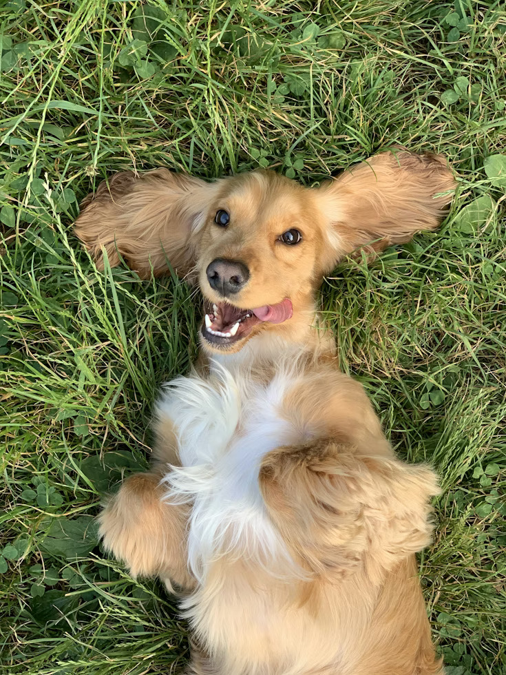
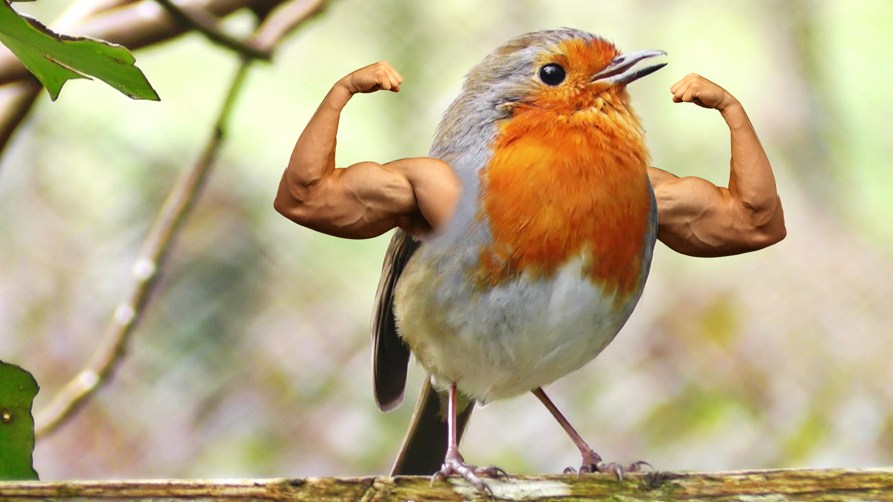
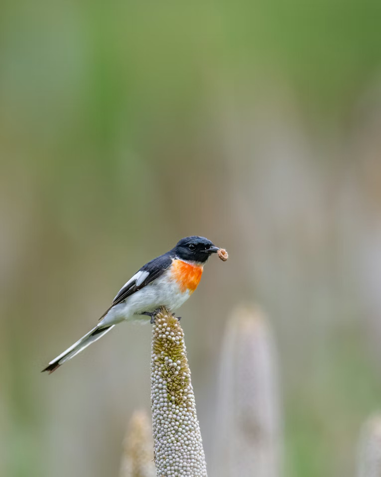
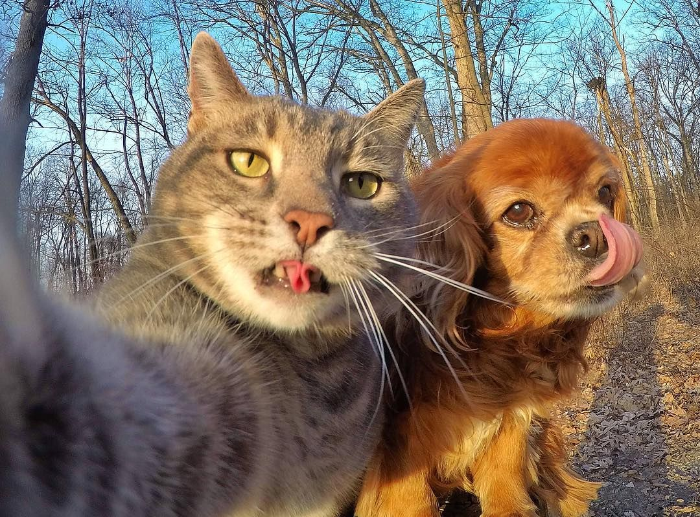

Temukan Sahabat Baru Anda

Buddy
Buddy adalah anjing yang sangat ramah dan aktif. Dia suka bermain bola dan berjalan-jalan di taman.

Luna
Luna adalah kucing yang kalem dan manja. Dia suka tidur di pangkuan dan mendengkur dengan lembut.

Snowball
Snowball adalah kelinci yang lucu dan penuh energi. Dia suka melompat-lompat dan makan wortel.

Rio
Rio adalah burung parkit yang cerdas dan bersuara merdu. Dia suka bernyanyi dan bermain dengan mainan.

Sunny
Sunny adalah lovebird yang aktif dan penuh warna. Dia sangat sosial dan suka berinteraksi dengan manusia.

Max & Joe
Max adalah anjing beagle yang penyayang dan setia. Dia sangat baik dengan anak-anak dan hewan lainnya.